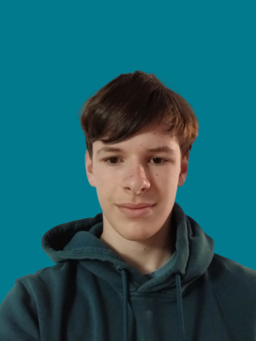

📍1D rue de Verlinghem
59130 Lambersart
📞 07 69 11 16 86
📩 Lilyanroy@gmail.com
Programmation : Initiation à Python
Organisation : Capacité à travailler en équipe sur un projet technique
Informatique : Certification pix niveau indépendant 2
Anglais : A2+
Espagnol : A2+
Motivé, curieux et passionné par l’ingénierie, la robotique et les nouvelles technologies. Je souhaite découvrir le monde professionnel, développer mes compétences et comprendre comment fonctionnent des projets techniques dans le monde professionnel.
Conception d’une mini-voiture électrique
Atelier Décathlon Campus
Une semaine de découverte au B’Twin Village